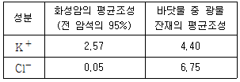
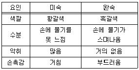
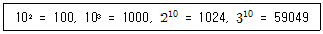

유기농업기사 (2011-08-21 기출문제)
1과목: 재배원론
1. 국화의 개화를 지연시키려면 어떠한 처리를 하여야 하는가?
- 장일처리
- 단일처리
- 고온처리
- 저온처리
(정답률: 64%)

2. 여름철에 벼가 장해형 냉해를 가장 받기 쉬운 시기는?
- 묘대기
- 분얼초기
- 수잉기
- 출수개화기
(정답률: 32%)
3. 국내 원예용 인공상토의 주요 원료인 코코피트(코이어 더스트)의 특징이 아닌 것은?
- 100% 천연이끼에서 유래한 섬유질 용토로 환경공해가 없다.
- 통기성, 보수력, 보비력이 좋아 뿌리 생장에 좋다.
- 값이 타 재료에 비해 저렴하고 취급이 간편하다.
- 토양 속에서 장기간 부패하지 않아 물리성을 개선시킨다.
(정답률: 59%)
4. 채소재배에서 본 포장에 직파하는 것보다 육묘를 이용하는 것의 장점이 아닌 것은?
- 작물의 자하부(뿌리) 생육에 유리
- 포장의 이용효율 증대
- 접목재배가 가능
- 화아를 분화시키기 용이함
(정답률: 53%)
5. 작물의 일반분류법에 준하여 잡곡에 해당하지 않은 것은?
- 조
- 기장
- 귀리
- 옥수수
(정답률: 67%)
6. 토마토 식물체에 수분이 부족하면 기공을 닫아 위조저항성을 쉽게 하는 식물호르몬은?
- Abscisic acid
- Cytokinin
- Ethylene
- Phosfon-D
(정답률: 56%)
7. 개체군생장속도를 구하는 공식으로 옳은 것은?
- 엽면적 × 순동화율
- 엽면적율 × 상대생장률
- 엽면적지수 × 순동화율
- 비엽면적 × 상대성장률
(정답률: 69%)
8. 장일 식물로 옭은 것은?
- 벼, 보리, 국화
- 국화, 무 양배추
- 밀, 상추, 감자
- 벼, 밀 상추
(정답률: 46%)
9. 화본과 식물에세 초엽에 대하여 가장 잘 설명하고 있는 것은?
- 종자근을 감싸는 하배축의 밑 부분이다.
- 제1본엽의 시원체가 되는 생장점조직이다.
- 발아 시 안쪽의 정아를 보호하는 역할을 한다.
- 동물의 배꼽과 같은 역할로 동화산물 잔류의 통로역할을 한다.
(정답률: 65%)
10. 요수량이 가장 큰 작물은?
- 옥수수
- 보리
- 수수
- 기장
(정답률: 60%)
11. 토마토의 화아분화에 대한 설명으로 틀린 것은?
- 파종 후 25~30일이 지나면 제1화방이 분화한다.
- 줄기에서 9매의 잎이 분화되고 생장점이 비후하여 제1화방으로 분화된다.
- 제1화방과 9번째 잎 사이로 새로운 생장점이 형성되어 원줄기로 신장해 가는데, 이후 주로 3마디 간격으로 제2, 제3, ... 화방이 순차적으로 착생한다.
- 육묘기에 양분이 부족하면 화아분화가 늦어지는데 특히 칼륨과 칼슘이 많은 영향을 준다.
(정답률: 54%)
12. 수해에 관한 다른 설명 중 틀린 것은?
- 벼에서 수잉기~출수개화기에는 수해에 매우 약하다.
- 벼에서 7일 이상 관수될 때에는 다른 작물을 파종할 필요가 있다.
- 벼의 청고현상은 수온이 낮은 유동 청수에서 볼 수 있는 현상이다.
- 질소질 비료를 많이 주면 탄수화물의 함량이 적어지고 호흡작용이 왕성하여 관수해가 더 커진다.
(정답률: 77%)
13. 벼가 담수조건에서도 잘 생육하는 가장 큰 원인?
- 파생통기조직의 발달
- 뿌리조직의 목질화
- 뿌리의 지근 발생
- 보온 효과
(정답률: 69%)
14. 벼 담수직파재에서 과산화석회를 종자에 분의하여 파종하는 주목적은?
- 종자소독
- 도복방지
- 산소공급
- 보온효과
(정답률: 54%)
15. 교잡에 의한 작물개량의 가능성을 최초로 제시한 사람은?
- Koelreuter
- Mendel
- Morgan
- Liebig
(정답률: 65%)
16. 작물에 질소가 과잉상태로 되는 경우 작물체 내에서 일어나는 변화로 옳은 것은?
- C/N율이 올라가게 된다.
- 개화가 촉진된다.
- 세포벽이 두꺼워진다.
- 아미드태 질소가 많아진다.
(정답률: 62%)
17. 도복의 유발에 관한 설명이 틀린 것은?
- 키가 크고 대가 약한 품종일수록 도복이 심하다.
- 칼리, 규산 다용은 도복을 유발한다.
- 밀식, 질소 다용을 도복을 유발한다.
- 가을 멸구의 발생이 많으면 도복이 심하다.
(정답률: 83%)
18. 토양미생물에 대한 설명으로 틀린 것은?
- Azotobacter는 단독생활 질소고정균이다.
- Nitrobacter는 탈질작용을 하는 균이다.
- Mycorthizae는 식물의 양분흡수를 돕는다.
- Desuitovibrio는 황화수소를 발생한다.
(정답률: 39%)
19. 작물을 연작하였을 때 피해가 가장 적은 작물은?
- 수박
- 아마
- 인삼
- 벼
(정답률: 77%)
20. 토양의 입단은 영구적인 것이 아니고 여러 가지 요인에 의해 파괴되는데, 토양입단의 파괴와 거리가 먼 것은?
- 토양의 통기를 좋게 하기 위한 경운 작업
- 비와 바람에 의한 토양 입단의 압축과 타격
- 온도에 의한 토양 입단의 팽창과 수축의 반복
- 토양을 피복하거나 피복작물 재배에 의한 유기물 공급
(정답률: 72%)
2과목: 토양비옥도 및 관리
21. 석회질토양에서 인산의 고정에 밀접하게 관계하는 원소는?
- Al
- Fe
- Mn
- Ca
(정답률: 50%)
22. 토양미생물과 유기물과 관련하여 가장 중요한 탄소의 순환과정에서 지구 전체의 권역별 탄소 저장량과 비교해 볼 때, 가장 적은 권역은?
- 식생
- 토양
- 대기
- 바다와 호수
(정답률: 50%)
23. 유효인산 추출방법이 아닌 곳은?
- disen 법
- Lancaster 법
- Bray 법
- Kjeidahi 법
(정답률: 38%)
24. 염해지 토양의 특성에 대한 설명으로 옳은 것은?
- 전기전도도가 일반 경작지보다 높다.
- 유기물함량이 일반경작지보자 많다.
- 마그네슘, 칼슘의 함량이 일반 경작지보다 많다.
- 석회 함량이 일반 경작지보다 적다.
(정답률: 28%)
25. 6대 조암광물에 속하지 않는 것은?
- 석영
- 질석
- 휘석
- 석회석
(정답률: 54%)
26. K+와 Cl-의 평균함량이 아래 표와 같을 때 폴리노프의 분화이론에 근거하여 계산된 K+의 가동율은? (단, Cl-의 가통율은 100으로 본다.)

- 2.25
- 0.10
- 1.27
- 3.00
(정답률: 42%)
27. 토양과 평형을 이루는 용액의 Ca2+, Mg2+ 및 Na+의 농도는 각각 6mmol/L, 10mmol/L 및 36mmol/L이다. 이로부터 구할 수 있는 나트륨흡착비는?
- 2.25
- 9
- 9√2
- 69.2
(정답률: 65%)
28. 수식에 의한 침식공식에 적용되지 않는 것은?
- 기후 요인
- 토양 침식도
- 경사 길이
- 강우 침식도
(정답률: 74%)
29. 다음 중 작물에게 가장 심각한 피해를 주는 토양 선충은?
- 부생성 선충
- 포식성 선충
- 곤충 기생성 선충
- 식물내부 기생성 선충
(정답률: 50%)
30. 토양의 유기물 유지방법과 그 필요성을 설명한 것으로 틀린 것은?
- 토양에 가해진 퇴비는 그 전량이 부식으로 될 수 있다.
- 유기물을 사용할 때 밭은 논보다 유기물의 분해가 많다는 것을 고려해야 한다.
- 필요 이상으로 땅을 갈지 말아야 한다.
- 높은 수확량을 내게 되면 더 많은 식물유체나 퇴구비가 환원되어야 한다.
(정답률: 67%)
31. 객토에 대한 설명으로 틀린 것은?
- 점토함량이 높은 객토원을 점토함량이 낮은 대상지에 넣으면 토성을 조절할 수 있다.
- 객토는 객토원의 두께가 10cm 이하의 것으로 원토양과 섞어야 한다.
- 객토를 하기 위한 객토원을 찾기 위해서 정밀토양도를 찾는 것은 불필요하다.
- 객토는 사질토양의 염류 희석, 고랭지 토양, 오염지 토양, 염작장해지 등에 효과가 있다.
(정답률: 84%)
32. 토양산성화의 원인으로 볼 수 없는 것은?
- 염기미포화교질의 증가
- 치환성 염기의 용탈
- 유기물의 분해 약제
- 생리적 산성비료의 과다시용
(정답률: 59%)
33. 퇴비의 부숙도 판별 및 관능검사 방법 중 요인별로 미숙 / 완숙 구별방법이 틀린 것은?

- 색깔
- 수분
- 악취
- 손촉감
(정답률: 69%)
34. 논토양을 미리 풍건처리 한 후에 담수 보온 처리하게 되면 무처리구에 비하여 어떤 유효양분의 생성량이 높아지는가?
- 유효태 인산
- 유효태 칼륨
- 유기태 질소
- 암모늄태 질소
(정답률: 48%)
35. 담수 시 환원층 논토양의 색으로 가장 적합한 것은?
- 적색
- 황색
- 적황색
- 암회색
(정답률: 54%)
36. 산성토양에 대한 설명으로 틀린 것은?
- 작물의 뿌리로부터 침입한 수소이온은 효소작용을 방해한다.
- 인산이 활성알루미늄과 결합하여 결핍이 초래된다.
- 용성인비는 산성토양에서도 작물생육에 효과가 크다.
- 산성이 강해지면 일반적으로 세균은 늘고 사상균은 줄어든다.
(정답률: 50%)
37. 식물 필수원소 중 토양의 pH가 높아질수록 용해도가 증가되어 식물에 대한 유효도가 증가되는 원소는?
- Mo
- Zn
- Cu
- Fe
(정답률: 71%)
38. 식물생장촉진 근권미생물의 기능이 아닌 것은?
- 식물생장촉진호르몬 생성
- 시데로포아 생성
- 타감작용
- 질소고정
(정답률: 53%)
39. 치환산도 측정을 위에 수소이온 침출용으로 어떤 용액을 주로 사용하는가?
- KCl
- NaCl
- H2O
- H2O2
(정답률: 65%)
40. 토양의 pH가 상승하면 CEC가 증가될 수 있다. 이와 관련이 없는 것은?
- 무기교질물의 변두리 전하
- 유기교질물의 COOH의 해리로 생기는 전하
- 이온 치환에 의한 음전하
- 유기교질물의 페놀성 OH기의 해리로 생기는 전하
(정답률: 32%)
3과목: 유기농업개론
41. 친환경농업을 실천하는 농가에서 사용하는 부산물 비료 중 질소질 성분이 가장 낮은 것은?
- 계분
- 우분
- 콩깨묵
- 피마자박
(정답률: 69%)
42. 가축의 뿌리로 틀린 것은?
- 양질의 유전자변형사료 지급
- 적절한 사욕 공간 제공
- 스트레스 최소화와 질병예방
- 건강증진을 위한 가축관리
(정답률: 85%)
43. 윤작의 효과가 아닌 것은?
- 지력유지 증진에 크게 기여한다.
- 볏과 작물과 콩과 작물의 윤작은 바람직한 작부체계이다.
- 잡초와 병해충을 효과적으로 예방 ㆍ 경감할 수 있다.
- 흙속에 있는 미생물 생태계를 크게 교란시킨다.
(정답률: 83%)
44. 논에서 벼 재배양식별 잡초발생이 많은 순으로 나열된 것은?
- 건답직파 ＞ 담수직파 ＞ 중묘기계이앙 ＞ 중묘손이앙
- 중묘기계이앙 ＞ 성묘손이앙 ＞ 건답직파 ＞ 담수직파
- 성묘손이앙 ＞ 중묘기계이앙 ＞ 담수직파 ＞ 건답직파
- 담수직파 ＞ 건답직파 ＞ 중묘기계이앙 ＞ 성묘손이앙
(정답률: 53%)
45. 유기농업에 있어서 유기합성농약의 대체 물질로 사용할 수 있는 것은?
- 기계유제
- 인산
- 유기염소계 농약
- 카바메이트계 농약
(정답률: 62%)
46. 1920년 발간된 Rachel L. Caeson의 저서로서 무차별한 농약사용이 환경과 인간에게 얼마나 위해한지 경종을 불리게 된 계기가 되었다. 이후 일반인, 학자, 정부관료들의 사고에 변화를 유도하여 IPM 사업이 발아하게 된 저서의 서명은?
- Soil fertility(토양비옥도)
- Am Ariculture Testamont(농업성전)
- Iandwirtschaftlischen Kurses(농업과정)
- Silent spring(침묵의 봄)
(정답률: 60%)
47. 페로몬의 특성 중 틀린 것은?
- 저항성을 유발한다.
- 작물이나 인체에 무해하다.
- 종특이성이 매우 강하다.
- 환경오염과 파괴가 없다.
(정답률: 79%)
48. 품종 내에 유전적 변화가 일어나 새로운 특성을 지닌 변이체가 생기게 될 때 이 변이체의 자손을 무엇이라 하는가?
- 종
- 아종
- 계통
- 품종
(정답률: 80%)
49. 유기농업에서 중요시 되는 녹비작물로 적합하지 않은 것은?
- 동부, 레드클로버
- 유채, 메밀
- 자운영, 화이트클로버
- 더덕, 상추
(정답률: 75%)
50. 최근 국제 사료가 급등하고 우리나라 남북지방을 중심으로 논을 이용한 조사료용 청보리(총체보리) 재배면적이 증가하고 있다. 청보리 재배의 장점이 아닌 것은?
- 국내에서 종자 구입이 가능하다.
- 사료가치가 양호하다.
- 비육용 소의 후기 급여시 육질개선 효과가 높다.
- 완숙기에 수확한 다음 후작물인 벼를 이앙을 하여도 수량에 영향이 없다.
(정답률: 56%)
51. 유기 경작을 하기 위한 토양비옥도 유지 ㆍ 증진 방안으로 볼 수 없는 것은?
- 합리적인 윤작 체계 운영
- 완숙퇴비에 의한 토양 미생물의 증진
- 토양 살충제에 의한 유해 미생물의 퇴치
- 대상재배와 간작
(정답률: 53%)
52. 염류농도장해의 초기단계 증상으로 옳은 것은?
- 잎의 녹색을 띤다.
- 뿌리의 일부가 말라든다.
- 잎의 가장자리가 말린다.
- 줄기가 고사된다.
(정답률: 82%)
53. 질소의 화학적 형태 중 토양입자에 가장 흡착이 잘되는 것은?
- 암모니아태
- 질산태
- 유기태
- 요소태
(정답률: 43%)
54. 토양 미생물 활용은 식물보호를 위하여 사용되는데 이는 길항, 항생 및 길항작용을 이용한 것이다. 이 때 얻을 수 있는 효과가 아닌 것은?(오류 신고가 접수된 문제입니다. 반드시 정답과 해설을 확인하시기 바랍니다.)
- 병 감염원 감소
- 작물표면 보호
- 토양오염 복원
- 포식성 노린재
(정답률: 5%)
55. 천적의 이용에 있어 포식성 천적이 아닌 것은?
- 무당벌레
- 기생벌
- 풀잠자리
- 포식성 노린재
(정답률: 71%)
56. [부엽토와 지렁이] 라는 책에서 자연에서 지렁이가 담당하는 역할에 대하여 기술하면서 만일 지렁이가 없다면 식물은 죽어 사라지게 될 것이라고 결론지은 유기농법의 이론적 근거를 최초로 제공한 사람은?
- J ㆍ I Rodater
- Maria Jhun
- Charles Darwin
- Hans Mueller
(정답률: 70%)
57. 국제 유기농업운동연맹의 기본 규약 중 품종, 종묘 선택에 관한 유기농업의 규정은?
- 병충해 잡초에 대한 적적한 정항성 품종 사용 불가
- 유전공학적 저항성 품종 사용
- 저항성 품종 사용, 유전공학적 종자 및 식물체 사용 불가
- 1년생 작물, 영년생 작물 사용 불가
(정답률: 84%)
58. 담수하의 논 토양의 특성으로 틀린 것은?
- 표면의 환원층과 그 밑의 산화층으로 토층분화한다.
- 논토양의 환원층에서 탈질작용이 일어난다.
- 논토양의 산화층에서 질화작용이 일어난다.
- 담수 전의 마른 상태에서는 환원층을 형성하지 않는다.
(정답률: 54%)
59. 유기축산물 실시상항으로 나타내는 기술이 아닌 것은?
- 동물복지의 향상
- 안적한 육류식뭄의 생산
- 구비활용에 의한 지력 감퇴
- 농가 부산물 가축에 이용
(정답률: 94%)
60. 유기농업에서의 작물의 해충방제는 천적을 이요하는 기술이 도입되어 많이 이용하고 있다. 다음 중 대상해충과 천적이 잘못 연결된 것은?
- 진딧물 – 무당벌레
- 가루깍지벌레 – 풀잠자리
- 온실가루이 – 온실가루이좀벌
- 점박이응애 – 칠레이리응애
(정답률: 59%)
4과목: 유기식품 가공.유통론
61. 세균의 생육곡선의 시기별로 순서가 바르게 된 것은?
- 대수기 – 유도기 – 사멸기 – 정지기
- 유도기 – 정지기 – 대수기 – 사멸기
- 유도기 – 대수기 – 정지기 – 사멸기
- 정지기 – 유도기 – 대수기 – 사멸기
(정답률: 65%)
62. 유기가공식품의 가공에 대한 설명으로 틀린 것은?
- 유기식품의 신뢰성은 전체 가공과정에서 철저히 유지되어야 한다.
- 식품 또는 가공보조제별로 가공보조제의 사용조건을 제한다,
- 미생물 및 효소제제 중 유전자재조합 미생물 효소제제는 제외한다.
- 당해 식품에 사용하는 용기 ㆍ 포장은 재활용이 가능해야하나 생물분해성 재질이면 안된다.
(정답률: 86%)
63. 유기농산물의 유통기능 중 교환기능은?
- 직거래나 직결체계를 유지하는 것이 일반적이다.
- 일반농산불과 대동소이하다.
- 도매시장 거래가 일반적이다.
- 재래시장 거래가 일반적이다.
(정답률: 54%)
64. 기유 제조시 균질을 하는 이유는?
- 미생물 사멸
- 크림층 형성 방지
- 향미의 개선
- 단백질의 콜로이드화
(정답률: 70%)
65. 레토르트 포장기법에 대한 설명으로 틀린 것은?
- 고온살균을 하므로 재질의 특성은 높은 살균온도에 견디는 내열성이 중요하다.
- 식품의 유통기한은 산소의 투과에 의한 품질변화에 의하여 결정된다.
- 식품을 포장하고 고온고압에서 살균한 후 밀봉한다.
- 주로 사용되는 재료로는 PET/AL/PP 이다.
(정답률: 50%)
66. 다음 중 HACCP의 7가지 원칙에 해당되지 않는 것은?
- 위해요소분석
- 검증절차 및 방법 수립
- 제품의 특징 기술
- 개선조치방법 수립
(정답률: 79%)
67. 식품의 저정 방법 중 에너지 주입에 의한 가열처리 저장방법은?
- 동결건조
- 항외여과법
- 냉장 냉동법
- 저온 살균법
(정답률: 44%)
68. 다음은 상업적 살균에 대한 설명으로 맞는 것은?
- 모든 미생물을 사멸하되 사멸 비용을 최소화 하는 것이다.
- 일정한 유통조건에서 일정한 기간 동안 위생적 품질이 유지 될 수 있는 정도로 미생물을 부분적으로 사멸하는 것이다.
- 기호 품질보다는 영양적 품질 유지를 고려하여 살균하는 방법이다.
- 식품의 종류에 다라 살균방법을 달리해야 하는 개념의 용어이다.
(정답률: 70%)
69. 포도주 제조과정에서 아황산염을 첨가하는 이유는?
- 유해균 증식 억제, 포도색소 산화 방지
- 곰팡이 증식 억제, 포도색소 산화 촉진
- 효모증식 억제, 포도색소 산화 촉진
- 세균증식 촉진, 포도색소 산화 촉진
(정답률: 71%)
70. 15℃의 물 2kg을 -20℃의 얼음으로 만드는데 필요한 냉동부하는? (단, 이 때 물과 얼음의 비열은 각각 1, 0.5cal/g℃이며, 용해 잠열은 79.6cal/g이다.)
- 418.4kcal
- 418.4cal
- 209.2kcal
- 209.2cal
(정답률: 50%)
71. 다음 중 식물근원 천연첨가물은?
- 우유응고효소
- BHT
- 가재색소
- 파파인
(정답률: 75%)
72. 편성혐기성균으로 포자를 형성하며, 치사율이 높은 신경독소를 생산하는 것은?
- Stapylococcus
- Clostridium botulinum
- Lactobacillus bulgaricus
- Bacillus cereus
(정답률: 50%)
73. 식품등의 표시기준에 의한 식용유지류 제품의 트랜스지방이 100g 당 얼마 미만일 경우 “0”으로 표시할 수 있는가?
- 1g
- 2g
- 4g
- 8g
(정답률: 79%)
74. 반감기가 길고, 지용성이기 때문에 동물의 지방조직에 축적되어 만성독성을 일으키는 농약은?
- 금속제
- 유기붕소제
- 유기염소제
- 유기인제
(정답률: 42%)
75. 마케팅 믹스의 구성유소가 아닌 것은?
- 상품전략
- 가격전략
- 유통전략
- 수송전략
(정답률: 73%)
76. 김치의 발효에 관계하는 미생물이 아닌 것은?
- Streptoccoccus mutans
- Leuconostoc mesenteroiides
- Lactobacillus plantarum
- Pediococcus cerevisiae
(정답률: 47%)
77. 과실류 저장에 관한 설명으로 옳은 것은?
- 과실에 당분이 많으면 저장성이 좋다.
- 과실의 호흡 작요을 저해하는 것이 좋다.
- 과실에 산이 많으면 저장성이 떨어진다.
- 과실은 냉동 저장하는 것이 좋다.
(정답률: 85%)
78. 유기가공식품의 제조 ㆍ 가공 방법과 관련한 내용으로 잘못된 것은?
- 기계적, 물리적 도는 화학적(분해, 합성 등) 제조 ㆍ 가공방법을 사용하여야 하고, 식품첨가물을 최소향 사용하여야 한다.
- 유기가공식품과 비유기가공식품을 동일한 시간에 동일한 설비로 제조 ㆍ 가공하지 않는다.
- 유기가공식품을 제조 ㆍ 가공하기 전에 비유기가공식품을 제조 ㆍ 가공한 때에는 제저설비의 이물질을 제거하고 세척등을 철저히 하여야 한다.
- 유기기가공식품과 원료유기농산물을 비유기가공식품 침 비유기원료농산물과 따로 보관 ㆍ 저장해야 한다.
(정답률: 84%)
79. 덜 익은 것 도는 날것을 육회로 섭취함으로써 인체에 감염되는 기생충이 아닌 것은?
- 회충
- 무구조충
- 유구조충
- 선모충
(정답률: 71%)
80. Escharichia coli의 세대기간은 17분이다. 식품의 Escharichia coli 숫자가 10/g 이면 170분 후에는 미생물 함량이 얼마로 변화하겠는가?

- 1000개/g
- 10000개/g
- 10240개/g
- 590490개/g
(정답률: 70%)
5과목: 유기농업관련 규정
81. 식품의약품안전청장이 고시한 식품등의 표시지초여서 규정하고 있는 유기가공식품 생산 및 취급시 사용이 가능한 식품첨가물(식품보조제 포함)이 아닌 것은?
- 이산화탄소
- 알긴산
- 한천
- 발효주정
(정답률: 48%)
82. 친환경농업육성법 시행규칙에서 규정한 유기농산물의 병해충 관리를 위하여 사용할 수 없는 자재는?
- 제충국 제제
- 데리스 제제
- 님 제제
- 순수 니코틴
(정답률: 75%)
83. 친환경농업육성법규에서 규정한 병해충 및 잡초의 방제조절 방법 중 유기농림산물 인증기준에 적합하지 않은 것은?
- 적합한 작물과 품종의 선정
- 적합한 윤작체계
- 멀칭 ㆍ 예취 및 화염제초
- 기계적 ㆍ 물리적 및 화학적 방법
(정답률: 70%)
84. 친환경농업육성의 규정에 의한 친환경농산물 표시방법 중 잘못 표기된 것은?
- 유기농산물 또는 유기포도
- 유기재배농산물 또는 유기축산한우
- 천연 ㆍ 무공해 등의 표현을 함께 표기할 수 있다.
- 저농약사과 또는 저농약농산물
(정답률: 50%)
85. 식품산업진흥법에 관한 “유기” 용어를 제품명의 일부로 사용할 수 있고, 주 표시면에 표시가 가능하기 위한 유기 원료의 최소함량은?
- 100%일 때
- 95% 이상
- 70% 이상 95% 미만
- 70% 미만
(정답률: 58%)
86. Codex 총회에서 식품표시분과위원회에서 논의한 식품 및 식물제품분야를 가이드라인으로 채택한 시기는? (단, 가축 및 가축제품 분야는 제외한다.)
- 1994년 10월
- 1996년 5월
- 1998년 5월
- 1999년 7월
(정답률: 48%)
87. 유기식품의 생산 ㆍ 가공 ㆍ 표시 ㆍ 유통에 관한 가이드라인에서 유기식품 생산에 허용되는 물질에 대한 설명 중 옳은 것은?
- 가축의 건강 및 동물 제품의 품질을 위하거나 식품의 준비 ㆍ 보존 ㆍ 저장을 위해 유기체계에서 사용되는 뭎질은 국제유기농언밍의 규정에 부합하여야 한다.
- 토양의 비옥도 및 개량을 위해 사용되는 물질 중 퇴비화된 동울의 배설물은 인증기관이나 인증권자가 필요성을 인정한 경우에 가능하다.
- 식품 병해를 방제용 물질 중 해초, 해초추출액, 해염 등 바다에서 생산된 것을 화학적 처리가 가능하다.
- 인증기관이 확인하는 경우에도 박테리아는 생물학적 해충방제제로 사용할 수 없다.
(정답률: 36%)
88. 유기식품의 생산 ㆍ 가공 ㆍ 표시 ㆍ 유통에 관한 가이드 라인에서 정한 가축의 번식방법에 대한 설명으로 틀린 것은?
- 자연교배가 권장되며 인공수정 방법은 사용할 수 없다.
- 수정란 이식기법과 번식호르몬 처리 방법을 사용해서는 안 된다.
- 유전공학을 이용한 번식기법을 사용해서는 안 된다.
- 지역적 조건과 유기 체계에서 사육하기 적합한 품종과 계통을 고른다.
(정답률: 60%)
89. 친환경농업육성법 시행규칙 제12조의 규정에 의한 친환경농산물 인증기관의 인증업무의 범위가 아닌 것은?
- 유기농산물 및 유기축산물
- 무농약농림산물, 무항생제 축산물
- 전환기유기농산물 및 전환기유기축산물
- 저농약농산물
(정답률: 57%)
90. 유기식품의 생산 ㆍ 가공 ㆍ 표시 ㆍ 유통에 관한 가이드라인 용어 설명이 옳지 않은 것은?
- 농산물/농산물 유래 제품은 인간의 섭취물(물, 소금, 첨가물 제외) 또는 동물 사료용으로 판매되는 원료나 가공된 제품이나 상품을 의미한다.
- 성분은 식품첨가물을 포함하여 식품 제조나 준비에 사용되는 모든 물질, 그리고 변형된 형태이더라도 최종 제품에 존재하는 모든 물질을 의미한다.
- 가축은 식용, 식품 제조용, 사냥이나 낚시로 포획되어 기르는 소, 말, 양, 돼지, 염소, 가금, 벌과 같은 사육동물을 의미한다.
- 공인검사제도/공인인증제도는 관할권을 가진 정부기관에 의해 정식으로 승인되거나 인정된 제도를 말한다.
(정답률: 32%)
91. 친환경농업육성법규에서 친환경농산물 인증기관의 지정취소 등 행정처분에 관한 사항으로 틀린 것은?
- 거짓이나 그 밖의 부정한 방법으로 지정을 받은 경우에는 반드시 지정을 취소하여야한다.
- 정당한 사유없이 1년 이상 계속하여 인증을 행하지 아니한 경우 농림수산식품부장관은 그지정을 취소하거나 6개월 이내의 긴간을 정하여 그 업무의 전부 또는 일부의 정지를 명할 수 있다.
- 농림수산식품부장관은 인증기관이 업무정지 명령을 위반하여 정지간 중 인증을 하였을 때에는 그 지정을 취소할 수 있다.
- 인증기관의 지정이 취소된 후 3년이 경과하지 아니한 자는 인증기관으로 지정을 받을 수 있다.
(정답률: 65%)
92. 유기가공식품의 제조 ㆍ 가공 등의 관한 사항으로 적합한 것은?
- 기계적 물리적 또는 생물적으로 제조 ㆍ 가공하며 허용되는 식품첨가물이라도 최소량만을 사용하여야 한다.
- 식품과 직접 접촉하는 부분에 대한 살균은 화학약품으로 소독한다.
- 유기가공식품과 비유기가공식품을 동일한 설비로 동일 시간에 제조 ㆍ 가공할 수 있다.
- 유기농산물과 일반농산물을 혼합 보관한다.
(정답률: 62%)
93. 유기식품의 생산 ㆍ 가공 ㆍ 표시 ㆍ 유통에 관한 가이드라인에서 유기농산물의 병해충 관리방법으로 적합하지 않는 것은?
- 화학적 통제
- 천적의 보호
- 동물의 방사
- 멀칭 또는 예취
(정답률: 73%)
94. 농림수산식품부장관은 관계 중앙행정기관의 장과 협의하여 몇 년마다 친환경 농업의 발전을 위한 친환경농업 육성계회을 수립하여야 하는가?
- 1년
- 3년
- 5년
- 7년
(정답률: 62%)
95. 식품산업진흥법 관련 규정에 따라 국립농산물품질과리원장은 유기가공식품 인증업체 및 인증품에 대하여 지도 및 관리를 현장조사 및 시판품조사를 실시할 수 있다. 농관원장이 현장조사 및 시판품조사를 실시하는 시기로 옳은 것은?
- 현장조사 : 연 1회, 시판품조사 : 연 1회
- 현장조사 : 연 2회, 시판품조사 : 연 1회
- 현장조사 : 연 1회, 시판품조사 : 연 2회
- 현장조사 : 연 2회, 시판품조사 : 연 2회
(정답률: 54%)
96. 식품산업진흥법에 의하여 유기가공식품 인증을 받으려면 어느 기관에 신청하여야 하는가? (단, 인증업무의 범위는 유기가공식품으로 한다.)
- 산림청
- 농촌진흥청
- 식품의약품안전청
- 우수식품인증기관
(정답률: 40%)
97. 친환경육성법에서 규정한 친환경농자재의 사용기준에 따라 토양개량과 작물생육을 위해 사용이 가능한 자재이면서 병해충 관리를 위하여 사용이 가능한 자재는?
- 염화나트륨
- 황산마그네슘
- 제오라이트
- 미생물제제
(정답률: 58%)
98. 인증심사 시 재배포장의 토양시료 채취지점은 재배 필지별로 최소 몇 개소 이상으로 하여야 하는가?
- 3
- 5
- 10
- 20
(정답률: 38%)
99. 유기식품의 생산 ㆍ 가공 ㆍ 표시 ㆍ 유통에 관한 가이드라인의 목적과 어긋난 조항은?
- 시장에서 일어나는 기만과 부정행위 그리고 입증되지 않은 제품의 강조표시로부터 소비자를 보호
- 유기제품의 국가간 경쟁으로 상품성향과 생산농업인의 소득증대에 기여
- 유기적으로 재배된 제품의 생산, 인증, 확인, 표시 규정을 조화
- 지역 및 세계 보존에 이바지하도록 각 국의 유기농업시스템을 유지하고 강화
(정답률: 60%)
100. 유기가공식품 인증기준에 대한 성명으로 틀린 것은?
- 해당 식품의 제조 ㆍ 가공 ㆍ에 사용한 원재료(정제수와 염화나트륨 제외)의 90% 이상이 친환경농업육성법에 의한 유기농산물이어야 한다.
- 동일 원재료에 대하여 유기농산물과 비유기농산물은 혼합하여 사용하여서는 아니된다.
- 해당 식품 중 사용량이 10%이하인 재료는 방사선 처리된 것을 사용하여서는 아니된다.
- 해당 식품 중 사용량이 5% 이하인 재료는 유전자재조합 식품 또는 식품첨가물을 사용할 수 있다.
(정답률: 7%)